Cum să pregătești și să conduci Studiul Turnului de veghe la timp
Versiunea 4.0 · noiembrie 2026
⚠ Două avertismente importante
Conduce întotdeauna folosind publicația originală. Aplicația afișează paragrafele și întrebările doar ca să calculeze timpii. Cel care conduce nu trebuie să se ghideze niciodată după conținutul afișat în cronometru: ca să prezinți informațiile auditoriului, folosește întotdeauna aplicația JW Library sau revista Turnul de veghe tipărită.
În timpul studiului, folosește modul prezentare. Acesta este modul recomandat de a folosi cronometrul cât timp conduci, deoarece evită distragerile: afișează doar ce e necesar, cu culorile verde, galben și roșu, ca să vezi dintr-o privire cum stai cu timpul, și cu butoane mari, ușor de apăsat, pentru a trece la paragraful următor și pentru a număra comentariile (secțiunea 9).
Cronometrul pentru studiu îl ajută pe fratele care conduce Studiul Turnului de veghe să împartă bine timpul și să încheie la timp.
Încarci articolul săptămânii în format PDF, iar aplicația:
citește articolul și găsește paragrafele, întrebările, versetele care trebuie citite, imaginile, notele și întrebările de recapitulare;
calculează cât timp să acorzi fiecărei părți: introducerea, fiecare paragraf, recapitularea și încheierea;
te ghidează în timpul studiului cu un cronometru pentru fiecare paragraf și culori care arată dacă te încadrezi în timp, ești în prelungire sau ai depășit timpul;
se reajustează singură: dacă un paragraf durează mai mult, împarte timpul rămas între următoarele, ca să închei la timp.
Aplicație neoficială. Este un proiect gratuit și independent. Nu este o publicație oficială și nu are legătură cu jw.org sau cu organizația Martorilor lui Iehova. Articolul este analizat pe dispozitivul tău: nu este trimis și nici păstrat pe vreun server.
Imaginile din acest manual folosesc un articol de exemplu inventat, nu un articol real din Turnul de veghe.
2Instalarea aplicației
Pictograma aplicației este o carte portocalie cu un indicator colorat (verde, galben și roșu) pe fond negru.
Dacă folosești deja aplicația în browser pe un dispozitiv Android, pe ecranul de start apare cardul verde „Folosești Android?” cu butonul „Deschide în Google Play”.
iPhone și iPad
Încă nu este în App Store, dar funcționează la fel de bine pe internet:
Apasă butonul Partajează (pătratul cu o săgeată în sus).
Alege „Adaugă pe ecranul principal” și apasă Adaugă. Pictograma va apărea pe ecran.
Calculator
Deschide temporizador-estudio.vercel.app în Chrome sau Edge. Dacă vrei, instaleaz-o ca pe un program cu pictograma de instalare din bara de adrese.
Actualizări: când există o versiune nouă, apare un mesaj cu butonul Actualizează. Aplicația nu se actualizează niciodată singură în timpul unui studiu.
3Ecranul de start
Este primul lucru pe care îl vezi când deschizi aplicația. Numerele roșii din imagine arată unde se află fiecare lucru.
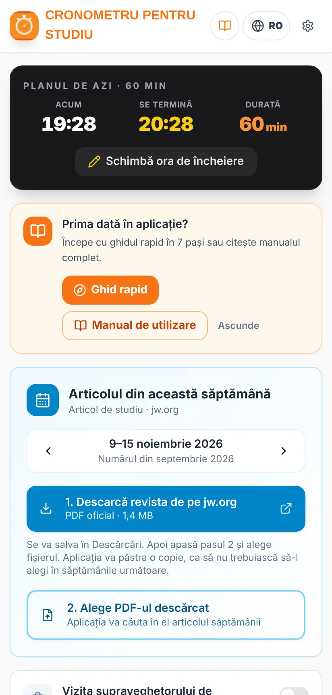
Ecranul de start.
Butonul cu cartea: deschide acest manual oricând.
„Prima dată în aplicație?”: deschide ghidul rapid sau acest manual. Când cunoști deja aplicația, apasă Ascunde.
„Folosești Android?” (doar pe telefoane Android, în browser): instalează aplicația din Google Play. Și acest card poate fi ascuns.
Mai jos găsești:
Programul de azi: ora actuală, ora la care studiul se termină și cât durează.
Articolul din această săptămână: ca să descarci revista și s-o deschizi (secțiunea 4).
Vizita supraveghetorului de circumscripție: comutatorul pentru studiul de 30 de minute (secțiunea 13).
Setările studiului: un rezumat al setărilor, cu linkul pentru editare.
Jos de tot, linkurile pentru confidențialitate, manual, Google Play și istoricul studiilor.
Sus sunt și limba (RO) și setările⚙.
4Încărcarea articolului săptămânii
Cardul „Articolul din această săptămână” arată săptămâna curentă (de exemplu, 9-15 noiembrie 2026) și numărul Turnului de veghe în care se află. Cu săgețile ‹› poți alege altă săptămână.
„1. Descarcă revista de pe jw.org” deschide PDF-ul oficial al numărului corespunzător. Pe Android se salvează în Descărcări; pe iPhone atinge Partajează → „Salvează în Fișiere”.
„2. Alege PDF-ul descărcat”: selectează acel fișier. Aplicația caută în revistă articolul săptămânii alese și îl analizează. După ce atingi pasul 1, când revii în aplicație acest buton devine verde („S-a descărcat? Atinge aici ca să-l deschizi”): ajunge o atingere.
Turnul de veghe se descarcă în limba aplicației. Dacă aplicația este în română, se descarcă ediția în română; dacă este în engleză, ediția în engleză, și tot așa pentru fiecare limbă. Ca să descarci altă limbă, schimbă mai întâi limba aplicației (secțiunea 14). În portugheză se descarcă ediția pentru Portugalia sau cea pentru Brazilia, după cum ai ales.
Aplicația păstrează o copie a revistei. Săptămânile următoare din același număr se deschid direct cu „Deschide articolul din această săptămână”, fără să mai descarci nimic. Revistele salvate se șterg singure la 3 luni după ultima lor săptămână.
Pe calculator poți și să tragi PDF-ul oriunde pe ecranul de start (apare mesajul „Lasă aici PDF-ul Turnului de veghe”) sau să alegi dosarul în care păstrezi revistele, iar aplicația le va găsi singură.
Spune că revista nu a fost publicată încă? jw.org publică fiecare număr cu câteva săptămâni înainte. Dacă alegi o săptămână foarte îndepărtată, s-ar putea să nu fie încă disponibilă.
5Rezumatul și programul studiului
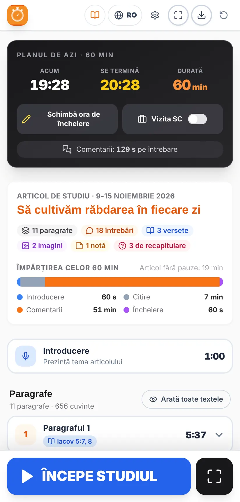
Programul de azi.
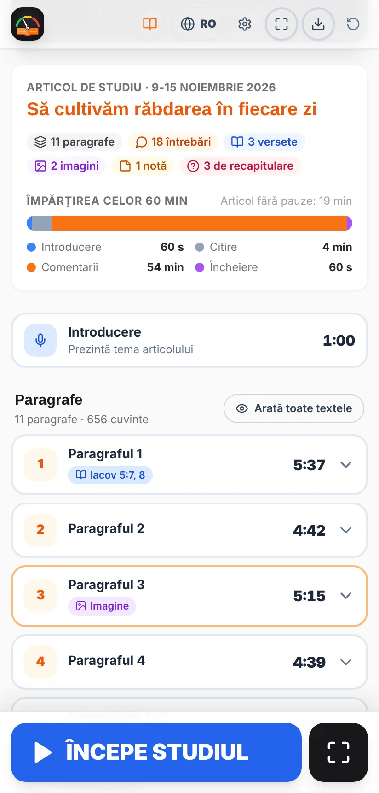
Rezumatul articolului.
Ora de încheiere: ora la care se termină studiul.
„Schimbă ora de încheiere”: folosește-o când cuvântarea publică se termină mai târziu (vezi caseta de mai jos).
Când schimbi ora de încheiere? Întrunirea durează 1 oră și 45 de minute: cântare și rugăciune (5 min), cuvântarea publică (30 min), cântare (5 min), studiul Turnului de veghe (60 min) și cântarea și rugăciunea de încheiere (5 min).
Dacă cuvântarea se termină mai târziu, acele minute se scad din studiul Turnului de veghe. Înainte să începi studiul, apasă „Schimbă ora de încheiere” și scrie ora la care trebuie să se termine studiul pentru ca întrunirea să se încheie la timp (cu 5 minute înainte de final, pentru cântare și rugăciune). Totul se recalculează ca să termini la ora aceea.
Dacă cuvântarea se termină la timp sau mai devreme, nu schimba nimic: studiul durează cele 60 de minute, iar întrunirea se poate încheia puțin mai devreme, dar niciodată mai târziu. De aceea, aplicația nu prelungește niciodată studiul peste timpul setat.
Dedesubt, rezumatul articolului arată:
titlul și săptămâna;
câte paragrafe, întrebări, versete, imagini și note are;
o bară colorată cu împărțirea timpului: IntroducereCitireComentariiÎncheiere.
Programul arată și „Comentarii: X s pe întrebare”: timpul mediu pentru răspunsurile la fiecare întrebare.
Dacă articolul nu încape în timpul ales, apare un avertisment. Poți mări durata sau alege o citire mai rapidă în Setări.
6Lista paragrafelor
Fiecare paragraf apare pe un rând, cu numărul și timpul prevăzut. Apasă pe un paragraf ca să-l deschizi.
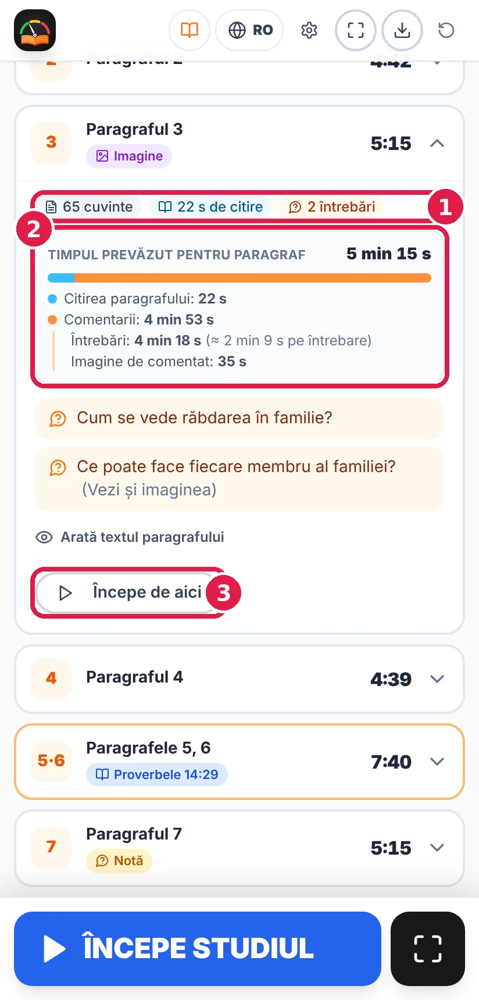
Un paragraf deschis.
Datele paragrafului, fiecare cu culoarea lui: cuvinte (gri), timp de citire (albastru) și întrebări (portocaliu). În timpul studiului apare și intervalul orar prevăzut (mov).
Timpul prevăzut pentru paragraf: totalul și cum se împarte. Bara arată citirea paragrafului (albastru), comentariile (portocaliu) și, la paragrafele lungi, un supliment pentru mai multe comentarii (verde). Dacă există un verset de citit, o imagine sau o notă, le comentează auditoriul: apar în cadrul comentariilor, sub întrebări (de exemplu „Verset de citit: 35 s”). Părțile adunate dau totalul.
„Începe de aici”: dacă studiul a început deja (de exemplu, dacă ai întârziat), mergi direct la acest paragraf.
Etichetele colorate îți arată ce trebuie să ai în vedere:
Etichetă
Ce înseamnă
Iacov 5:7, 8
Este un verset de citit.
Imagine
Întrebarea se referă la o imagine din articol.
Notă
Există o notă de comentat.
★ Idee importantă
Întrebarea menționează o casetă sau o idee între ghilimele.
Cu „Arată textul paragrafului” poți citi textul ca să pregătești timpii. Pentru conducere folosește întotdeauna publicația originală.
Paragrafele care au aceeași întrebare (de exemplu „5, 6”) merg împreună, iar butonul Următorul trece peste tot grupul.
7Conducerea studiului pas cu pas
Recomandat: în timpul studiului folosește modul prezentare (secțiunea 9). Aici explicăm cum funcționează; e la fel în ambele afișări.
Pe telefon, butoanele principale sunt mereu jos:
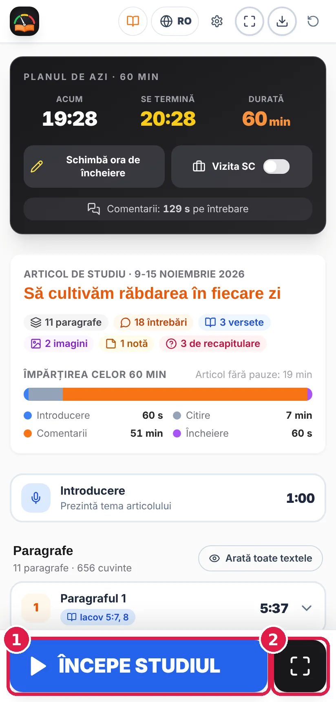
Înainte de început.
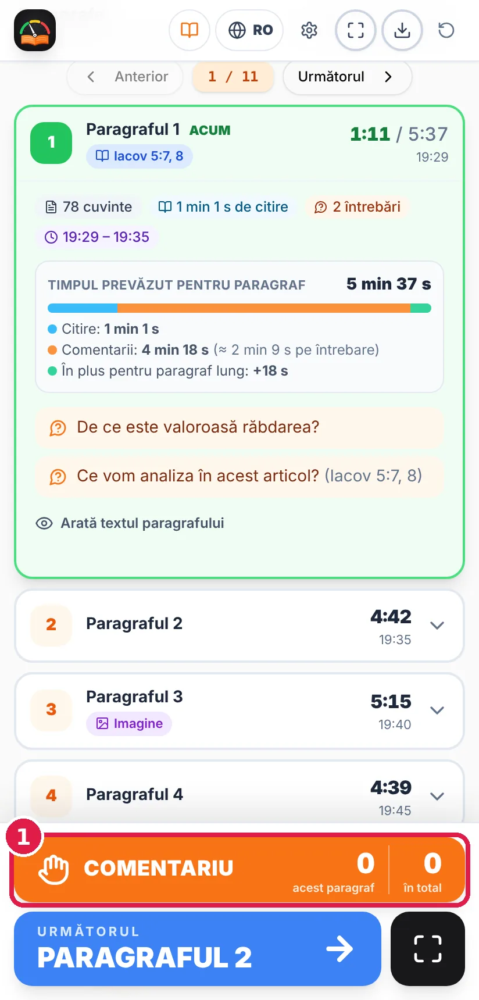
În timpul unui paragraf.
Butonul mare albastru: îți spune ce urmează. Apasă-l de fiecare dată când treci la altă parte: Începe studiul → Paragraful 1 → Paragraful 2 → … → Recapitulare → Încheiere → Încheie studiul.
Butonul negru⛶: deschide modul prezentare.
În timpul paragrafelor apare și butonul portocaliu ✋ COMENTARIU: apasă-l de fiecare dată când cineva comentează. La final vei vedea câte comentarii au fost.
Introducere. Apasă „Începe studiul”. Pornesc cronometrul general și cel al introducerii.
Paragrafe. Apasă Următorul la începutul fiecărui paragraf. Vezi timpul trecut și timpul prevăzut (de exemplu 1:11 / 5:43) și culoarea (secțiunea 8).
Întrebări de recapitulare. După ultimul paragraf urmează întrebările din caseta de la final.
Încheiere. Durează exact cât a rămas până la ora de încheiere: dacă rămâne timp, îl folosește tot, chiar dacă e mai mult decât minutul din Setări, iar dacă rămâne mai puțin, se scurtează. Dacă trece ora de încheiere, devine roșie.
Încheie studiul. Cronometrul se oprește și se salvează raportul studiului (secțiunea 15).
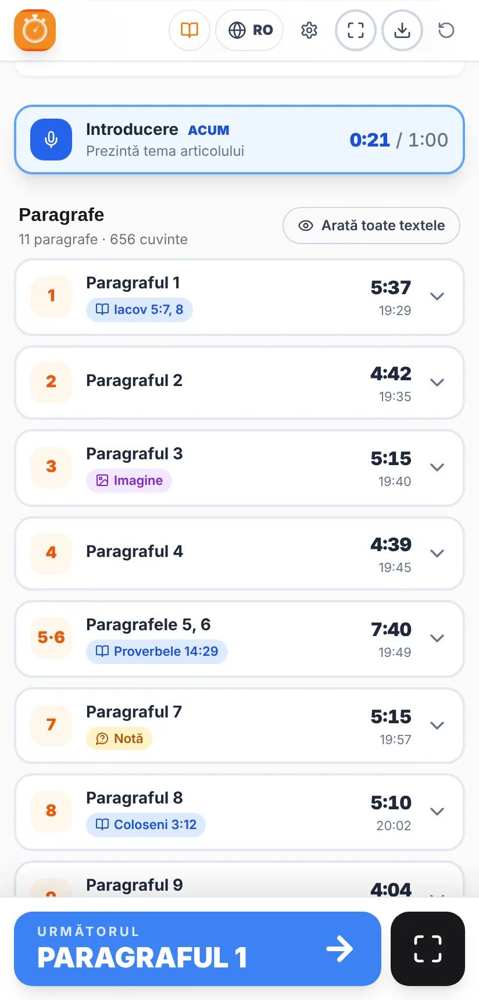
Introducere în desfășurare.
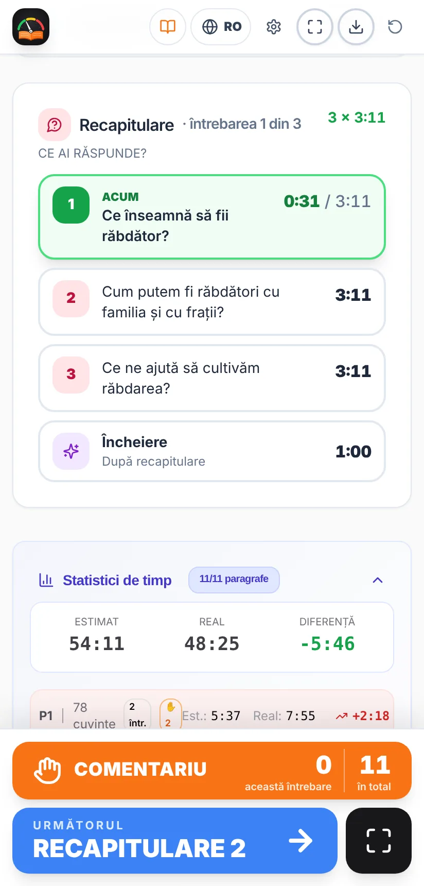
Întrebări de recapitulare.
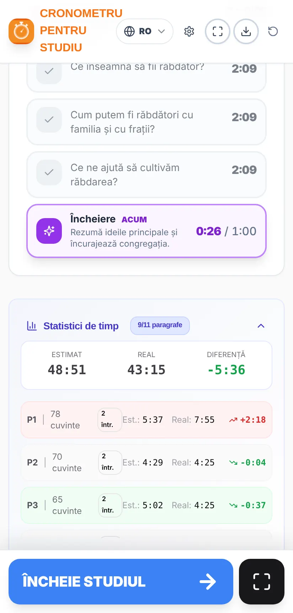
Încheiere.
Cu butonul ⏸ din program poți opri temporar cronometrul dacă apare o întrerupere. În pauză se oprește cronometrul părții în curs, dar ora de încheiere nu se mută: timpul rămas continuă să scadă, pentru că întrunirea se termină la oră.
8Culorile: verde, galben și roșu
Cardul părții în desfășurare (paragraf, introducere, întrebare de recapitulare sau încheiere) își schimbă culoarea în funcție de timpul scurs:
Culoare
Când
Ce faci
ÎN TIMP
Până la timpul planificat.
Totul e bine: continuă așa.
PRELUNGIRE
A depășit timpul, dar cu cel mult 30%.
Începe să închei comentariile.
DEPĂȘIT
Cu peste 30% mai mult decât era planificat.
Treci la paragraful următor.
În timp.
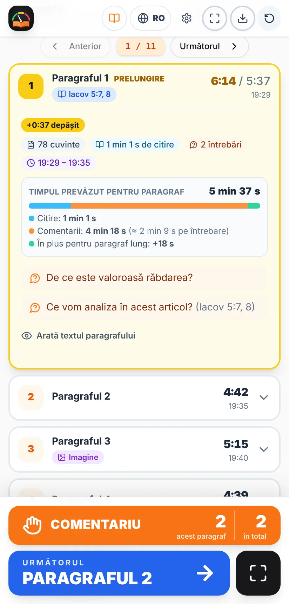
Prelungire, cu timpul depășit.
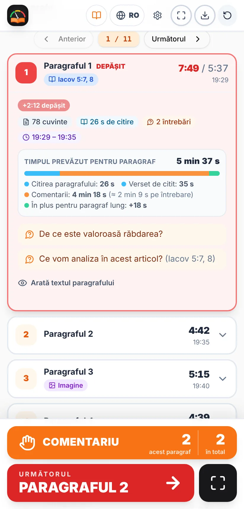
Depășit.
În ultimele 5 minute ale studiului, paragrafele și întrebările de recapitulare nu au prelungire: trec direct de la verde la roșu, ca să nu se piardă timpul de la final. Încheierea își păstrează întotdeauna prelungirea.
Dacă o parte durează mai mult, nu e nicio problemă: când atingi Următorul, aplicația împarte din nou timpul rămas între ce a mai rămas, ca să închei la timp.
Și butonul „Următorul” te avertizează
Când partea în curs devine roșie, se schimbă și butonul mare pentru a merge mai departe, ca să observi imediat:
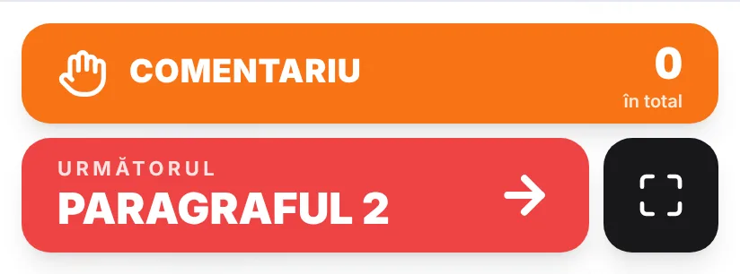
Roșu: timpul se mai poate recupera.
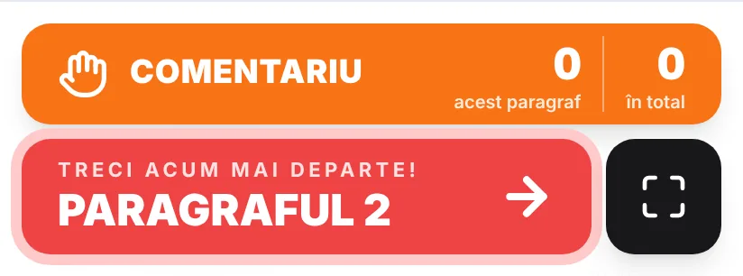
Clipește: treci acum mai departe.
Buton roșu: partea și-a depășit timpul, dar se mai poate recupera în ce a rămas. Începe să închei comentariile.
Buton roșu care clipește cu „Treci acum mai departe!”: nu mai e de unde recupera timpul (ar rămâne mai puțin de 30 de secunde pentru fiecare întrebare rămasă sau ești în ultimele 5 minute). Treci mai departe cât poți de repede.
În modul prezentare butonul devine alb cu litere roșii, ca să se vadă bine pe orice culoare de fundal.
Dacă nu vrei asta, dezactiveaz-o din Setări → Alerte → „Butonul „Următorul” roșu”.
9Modul prezentare
Este modul recomandat pentru conducerea studiului. Arată doar ce e important, cu litere și butoane mari, iar culoarea îți arată dintr-o privire cum stai cu timpul.
Se deschide cu butonul ⛶ de jos și se închide cu ✕ de sus (sau cu butonul „înapoi” al telefonului, fără să ieși din aplicație).
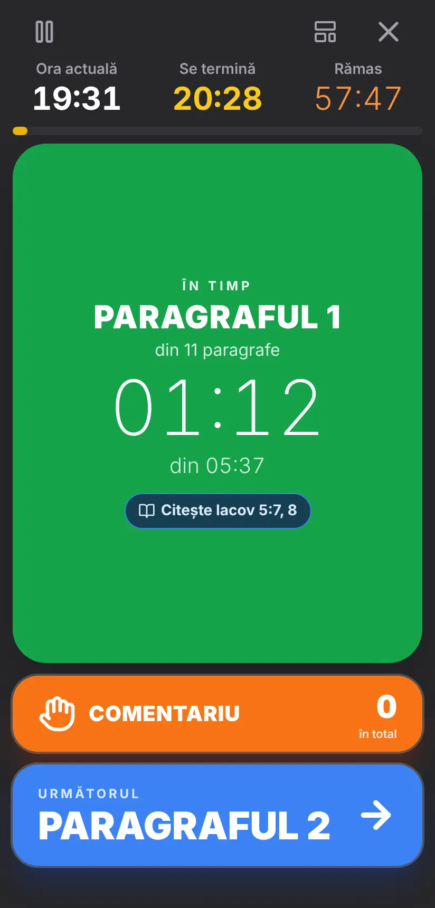
Modul prezentare în timpul unui paragraf.
Cadrul colorat: unde te afli (de exemplu Paragraful 1), cronometrul acelei părți și timpul prevăzut. Este verde, galben sau roșu, în funcție de timp.
Comentariu: apasă de fiecare dată când cineva comentează. În stânga vezi comentariile la acest paragraf (sau această întrebare), iar în dreapta totalul.
Următorul: trece la partea următoare. Butonul îți spune ce urmează.
Sus vezi la ce oră a început studiul, ora actuală, ora la care se termină și cât timp a rămas.
Există trei aranjamente. Le schimbi cu butonul ▦ de sus sau din Setări → Ecran:
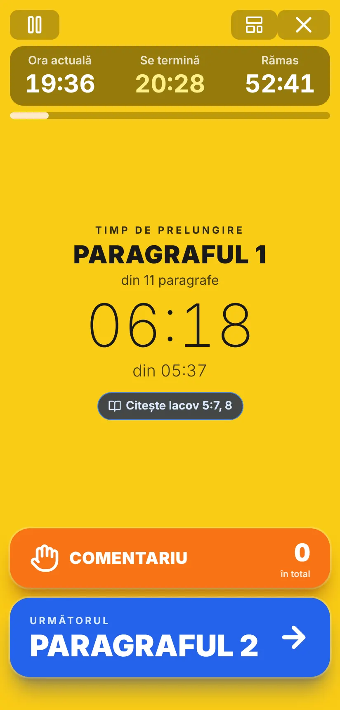
Semafor: tot ecranul își schimbă culoarea.
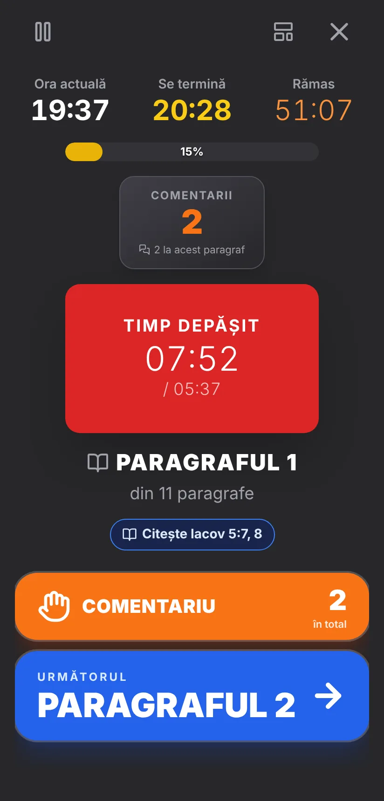
Clasic: cu numărătorul de comentarii.
La final, butonul mare arată „Încheie studiul” și apoi „Vezi raportul”.
10Cum se calculează timpii
Citirea fiecărui paragraf = numărul de cuvinte ÷ viteza de citire (150, 180 sau 210 cuvinte pe minut). Fiecare verset, imagine, notă sau idee importantă adaugă și timpul pentru răspuns (cel puțin 30 de secunde; implicit 35) ca comentariu, pentru că auditoriul îl citește sau îl comentează.
Introducerea și încheierea au timpul din Setări (implicit câte 1 minut). Încheierea se adaptează la ora de încheiere: dacă rămâne timp după recapitulare, îl primește pe tot; dacă rămâne mai puțin, se scurtează.
Comentarii: restul timpului se împarte la toate întrebările. Paragrafele lungi sau grupate primesc puțin mai mult („suplimentul” verde din secțiunea 6).
În timpul studiului: de fiecare dată când apeși Următorul, restul se recalculează ca să termini la timp.
Exemplu: la un studiu de 60 de minute cu 11 paragrafe și 21 de întrebări, aproximativ 7 minute sunt pentru citire, 2 pentru introducere și încheiere și aproximativ 51 pentru comentarii: puțin peste 2 minute pe întrebare.
11Setări
Atinge ⚙ sus, în dreapta. Setările se păstrează pe dispozitivul tău și sunt împărțite în patru file:
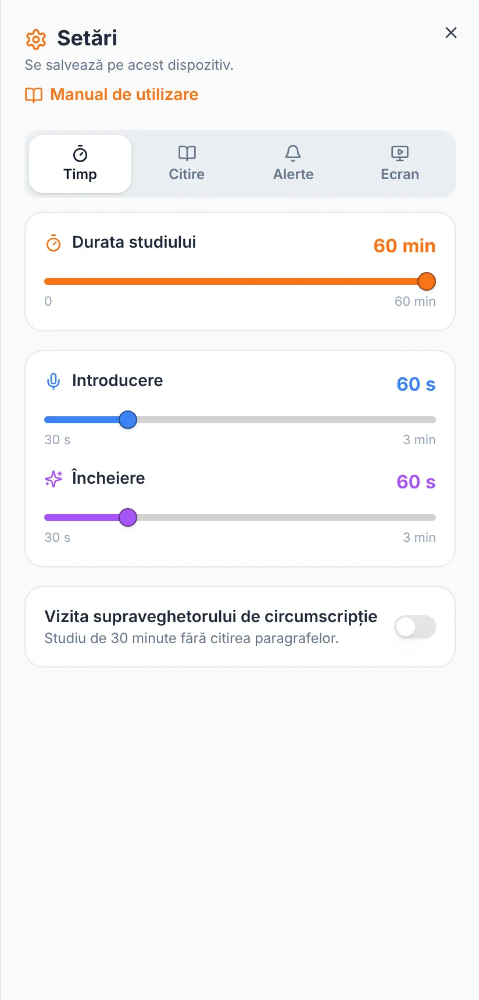
Timp
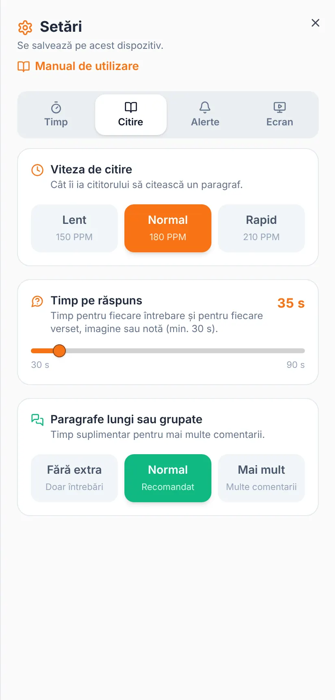
Citire
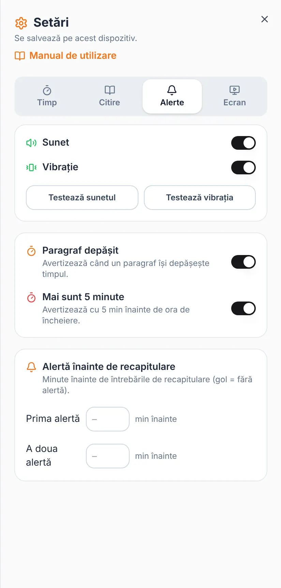
Alerte
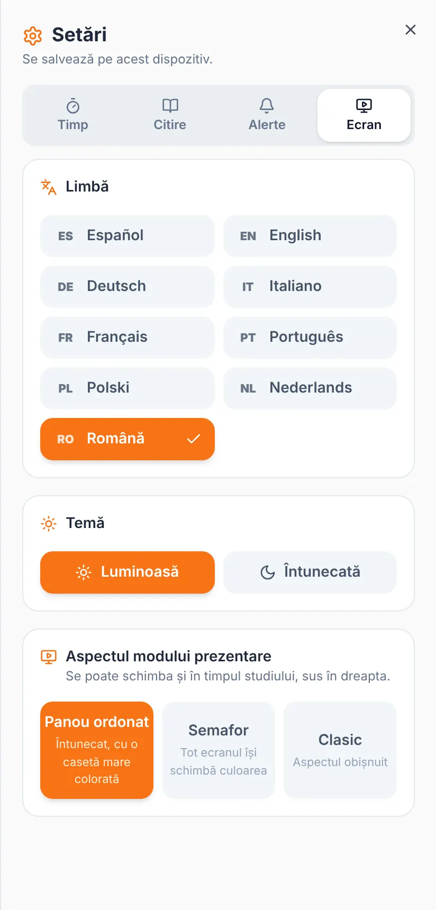
Ecran
Filă
Ce poți schimba
Timp
Durata studiului (până la 60 min). Durata introducerii și a încheierii (de la 30 s la 3 min). Vizita supraveghetorului de circumscripție.
Citire
Viteza de citire a cititorului: Lent (150), Normal (180) sau Rapid (210 cuvinte/min). Timp pe răspuns (de la 30 la 90 s; se folosește și pentru fiecare verset, imagine, notă sau idee importantă). Paragrafe lungi sau grupate: Fără extra, Normal sau Mai multe comentarii.
Alerte
Sunet și vibrație (cu butoane pentru testare). Alertă de paragraf depășit, alertă „Mai sunt 5 minute” și până la două alerte înainte de recapitulare.
Ecran
Limba, tema luminoasă sau întunecată (cu șase variante întunecate: grafit, negru AMOLED, albastru de noapte, cald, verde de pădure și vânătă; și șase variante luminoase: alb, crem, albastru deschis, verde mentă, lavandă și gri perlat) și aspectul modului prezentare.
Dacă schimbi viteza de citire sau timpul pe răspuns în timpul studiului, schimbarea se aplică la studiul următor.
12Alerte sonore și vibrații
Paragraf depășit: sună când paragraful curent își depășește timpul.
Mai sunt 5 minute: cu 5 minute înainte de ora de încheiere, cu sunet, vibrație și un mesaj pe ecran.
Înainte de recapitulare: scrie cu câte minute înainte de întrebările de recapitulare vrei o alertă (de exemplu, 10 și 5). Lasă gol dacă nu vrei.
Puțin timp pentru recapitulare: dacă rămân mai puțin de 20 de secunde pe întrebare de recapitulare, aplicația te avertizează.
Butonul „Următorul” roșu: butonul pentru a merge mai departe devine roșu când o parte își depășește timpul și clipește când nu mai e de unde recupera timpul (secțiunea 8).
Verifică dacă telefonul nu este pe silențios, dacă vrei să auzi alertele. Vibrația funcționează pe Android; pe iPhone depinde de browser.
13Vizita supraveghetorului de circumscripție
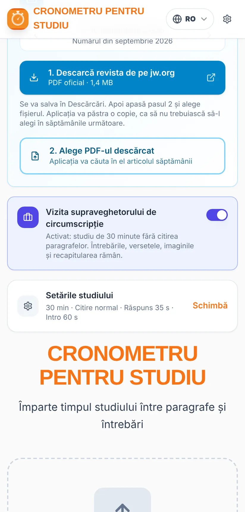
Comutator activat: studiu de 30 de minute.
În săptămâna vizitei, activează comutatorul „Vizita supraveghetorului de circumscripție” pe ecranul de start (sau în Setări → Timp). Studiul durează atunci 30 de minute și paragrafele nu se citesc: rămân întrebările, versetele, imaginile și recapitularea. Nu uita să-l dezactivezi după vizită.
În acea săptămână paragrafele nu se citesc. La timpul prevăzut pentru fiecare paragraf, versetele de citit, imaginile și notele apar în cadrul comentariilor, de exemplu „Verset de citit” sau „Imagine de comentat” (la plural dacă sunt mai multe).
14Limbi
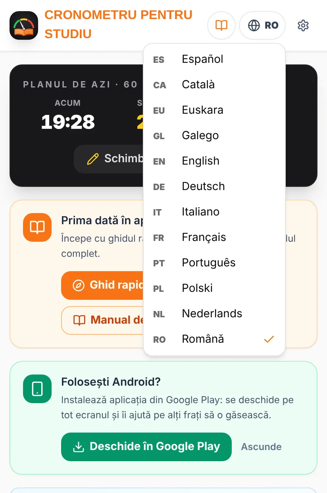
Meniul de limbi.
Aplicația funcționează în spaniolă, catalană, bască, galiciană, engleză, germană, italiană, franceză, portugheză, poloneză, neerlandeză și română. Schimbă limba cu butonul cu glob de sus sau din Setări → Ecran. Când schimbi limba:
toată aplicația apare în limba respectivă, cu datele și orele corespunzătoare;
butonul jw.org descarcă Turnul de veghe în aceeași limbă. Limba aplicației hotărăște limba revistei;
în portugheză, aplicația întreabă o singură dată dacă preferi ediția pentru Portugalia sau cea pentru Brazilia. Poți schimba asta mai târziu în Setări → Ecran.
Acest manual este disponibil în toate aceste limbi: folosește butoanele de limbă din partea de sus a paginii.
15La final: raportul și istoricul
Când apeși „Încheie studiul”, aplicația salvează un raport cu timpii fiecărei părți. Te ajută să vezi ce a durat prea mult și să faci mai bine data viitoare.
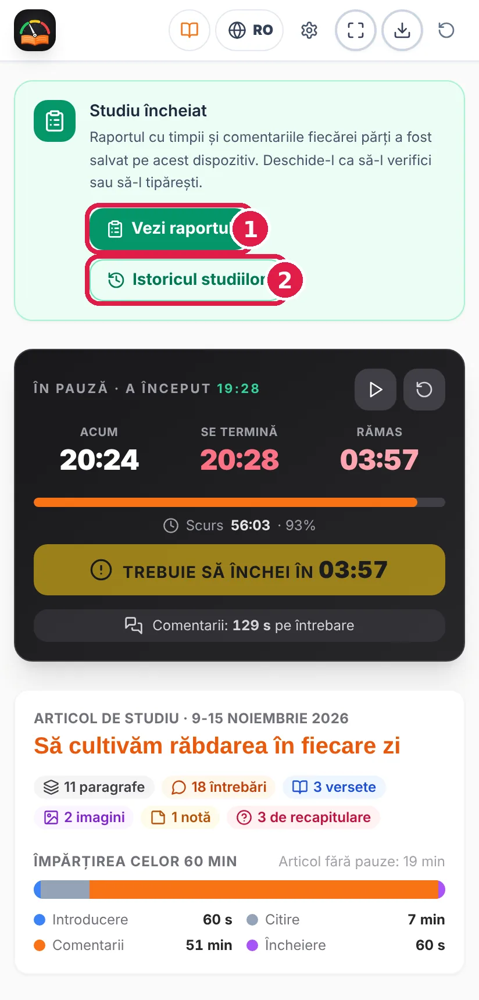
Sus apare cardul „Studiu încheiat”.
Vezi raportul: deschide raportul acestui studiu într-o filă separată.
Istoricul studiilor: deschide lista tuturor studiilor salvate.
Raportul
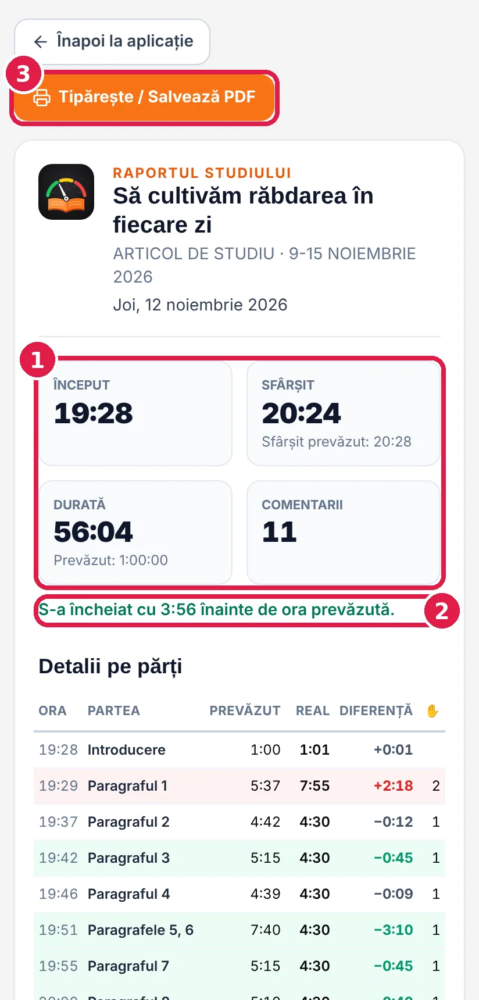
Partea de sus a raportului.
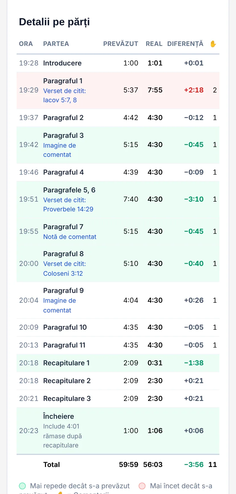
Tabelul cu fiecare parte.
Începutul, sfârșitul și durata studiului, cu ora de încheiere prevăzută și totalul comentariilor.
Rezumat într-o propoziție, de exemplu „Încheiat cu 3:57 înainte de ora prevăzută” (verde) sau „după” (roșu).
Tipărește / Salvează PDF: ca să-l tipărești pe hârtie sau să-l salvezi ca fișier.
Tabelul are un rând pentru fiecare parte: introducerea, fiecare paragraf, fiecare întrebare de recapitulare și încheierea. Pe fiecare rând vezi:
ora la care a început acea parte;
Prevăzut și Real: timpul din program și timpul folosit cu adevărat;
Diferența: cu verde dacă a mers mai repede și cu roșu dacă a durat mai mult;
✋: comentariile marcate.
Sub fiecare paragraf, cu albastru: versetele de citit (cu referința), imaginile și notele de comentat.
Pe calculator și la tipărire apar și cuvintele și întrebările fiecărui paragraf. Raportul tipărit încape pe o singură pagină.
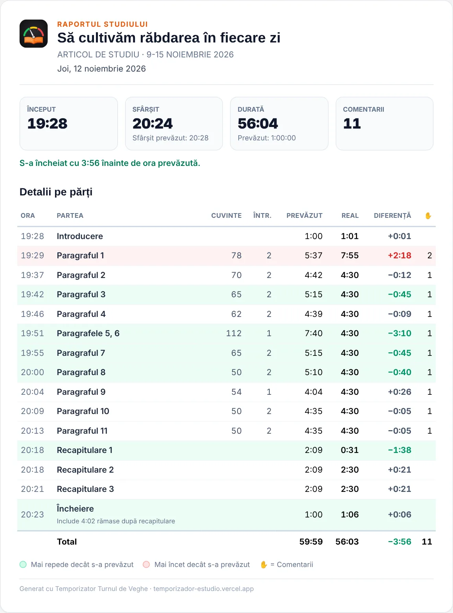
Raportul complet, așa cum apare pe calculator sau tipărit.
Istoricul studiilor
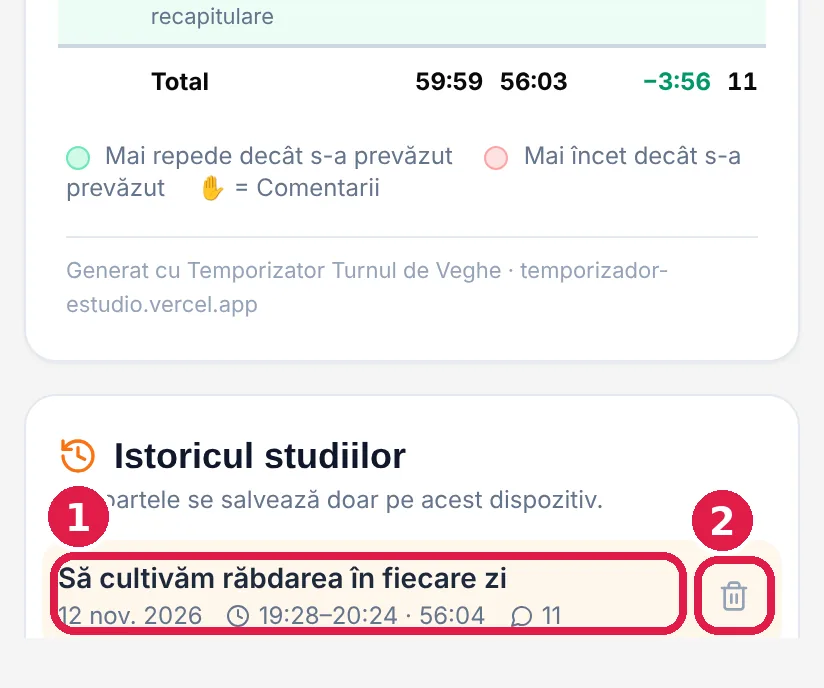
Lista studiilor salvate, sub raport.
Apasă pe un studiu ca să-i vezi raportul. Arată data, orele, durata și comentariile.
Coșul de gunoi: ca să ștergi un raport. Apasă o dată și confirmă la „Ștergi?”.
Rapoartele se salvează doar pe acest dispozitiv, niciodată pe internet. Se păstrează până la 100 de studii. Dacă ștergi datele browserului sau ale aplicației, istoricul se pierde.
Poți deschide istoricul și din cardul „Istoricul studiilor” de pe ecranul de start.
Alte opțiuni
Sub program găsești și statisticile de timp pentru fiecare paragraf.
Cu butonul exportă⬇ de sus poți salva programul ca imagine sau PDF.
Ca să pregătești alt studiu, apasă repornește↻.
16Întrebări frecvente
Pot să conduc citind paragrafele și întrebările din aplicație?
Nu. Aplicația le afișează doar ca să calculeze timpii. Ca să conduci, folosește întotdeauna JW Library sau Turnul de veghe tipărit.
De ce s-a descărcat Turnul de veghe în altă limbă?
Revista se descarcă în limba aplicației. Schimbă limba cu butonul cu glob și atinge din nou „Descarcă revista de pe jw.org”.
Spune că nu recunoaște formatul articolului.
Folosește PDF-ul oficial al Turnului de veghe, ediția de studiu, descărcat de pe jw.org (butonul „Descarcă revista de pe jw.org” face asta pentru tine). PDF-urile scanate sau făcute din capturi de ecran nu pot fi citite.
Nu găsește articolul săptămânii în revistă.
Verifică dacă săptămâna aleasă corespunde acelui număr al revistei. Dacă nu, aplicația arată cel mai apropiat articol și te lasă să alegi altă săptămână.
Am nevoie de internet în timpul studiului?
Doar ca să descarci revista. După ce articolul este încărcat, cronometrul funcționează fără conexiune.
Am întârziat sau am început mai târziu. Ce fac?
Deschide paragraful la care ați ajuns și atinge „Începe de aici”. Aplicația va împărți timpul rămas.
Cuvântarea publică s-a terminat mai târziu.
Înainte de început, apasă „Schimbă ora de încheiere” și scrie ora la care trebuie să se termine studiul pentru ca întrunirea să se încheie la timp. Aplicația scurtează totul ca să termini la ora aceea. Această opțiune doar scurtează studiul: nu îl prelungește niciodată.
Alertele nu sună.
Verifică în Setări → Alerte că sunt activate, atinge „Testează sunetul” și asigură-te că telefonul nu este pe silențios.
Ce date păstrează aplicația?
Doar setările tale și revistele pe care alegi să le păstrezi, și întotdeauna pe dispozitivul tău. Nu există conturi și nu se trimit date la niciun server. Mai multe informații în politica de confidențialitate.
Unde văd studiile din alte săptămâni?
În istoricul studiilor: apasă „Istoricul studiilor” când termini un studiu sau folosește cardul verde de pe ecranul de start.
Pot să șterg un raport?
Da. În istoric, apasă coșul de gunoi de lângă studiu și confirmă la „Ștergi?”.
De ce a durat încheierea mai mult decât era prevăzut?
Dacă rămâne timp după recapitulare, încheierea folosește acel timp ca să termini la oră. Raportul arată asta sub „Încheiere”.